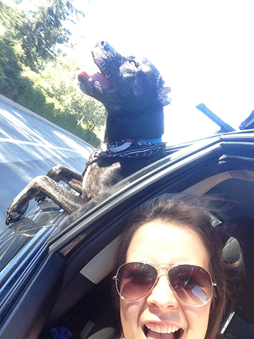

Hi there!
My name is Kendall Donaldson and I am a third year at California Polytechnic State University in San Luis Obispo. I'm studying Graphic Communication with a concentration in Graphic Communication Management.
If you'd like to get to know me better, please take a look around my site. If you'd like to get in touch with me, head over to my contact page and shoot me an email.
I've added a lot of picturs, so you can see what I like to do and how I like to spend my free time. If you can guess from th picture to the left, I love dogs!
Enjoy!